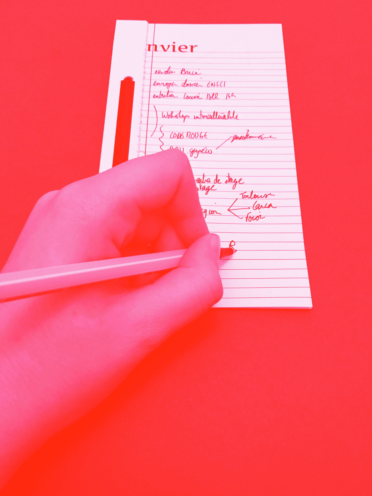
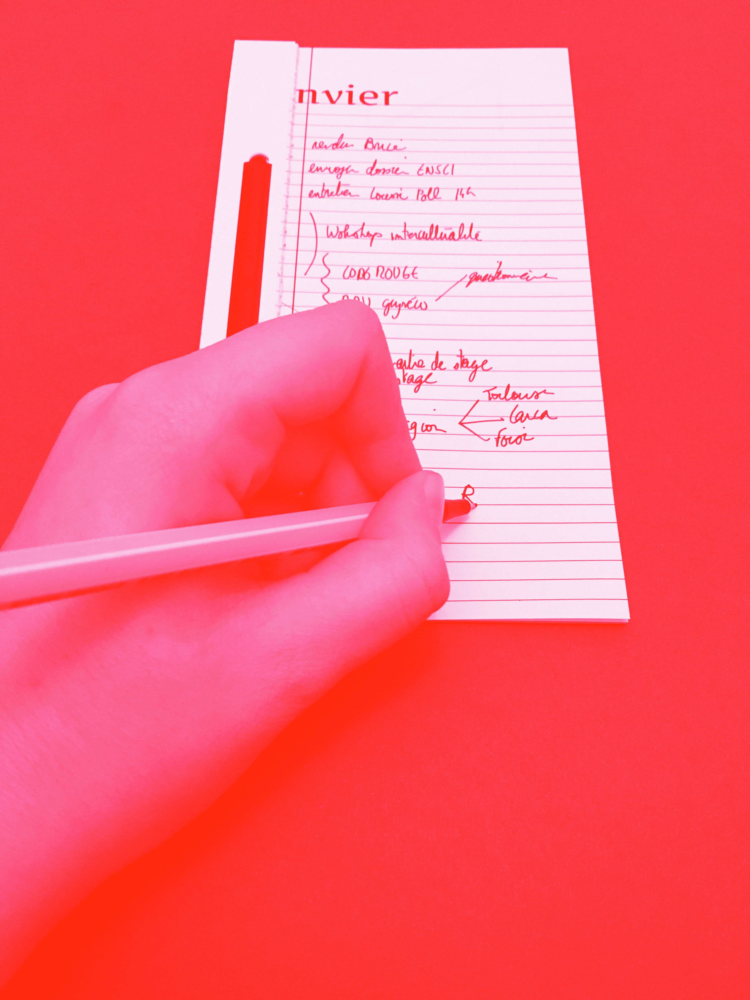
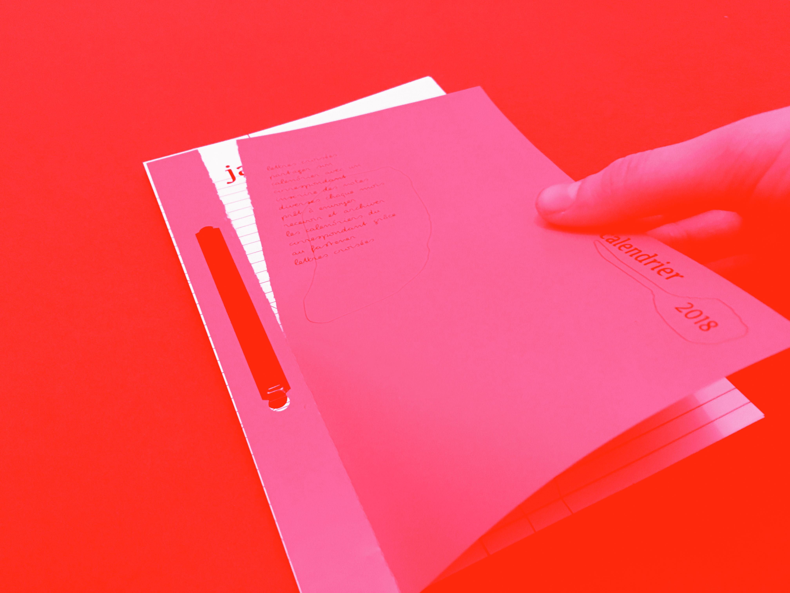
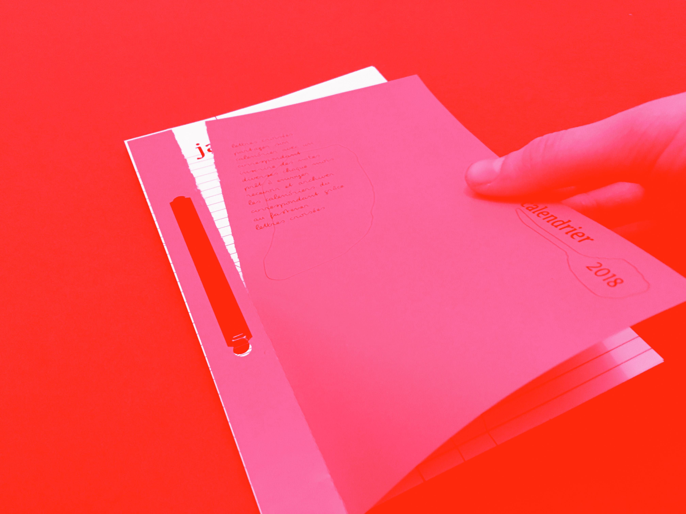

lettres croisées
Aujourd’hui, de nombreuses familles sont dispersées géographiquement. Les grand-parents et petit-enfants ont souvent peu d’occasions de créer du lien. Ainsi, je propose de questionner l’objet de l’Almanach du facteur pour créer un objet de lien entre ces usagers. Lettres croisées propose un échange mensuel entre grand-parents et petit-enfants, au travers d’un calendrier à annoter et envoyer. Il amène un échange épistolaire au travers des notes prises tout au long de l’année, comme une nouvelle façon de communiquer. Le calendrier disparaît chez l’un des correspondants, pour se recomposer chez l’autre, grâce à un système d'archivage. C’est une trace de l’année passée par l’autre.
annoter la page du mois
détacher la page
envoyer
archiver

 

 
